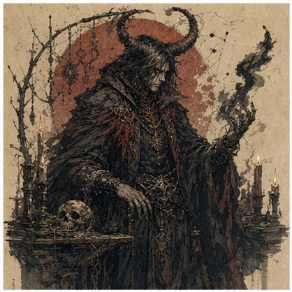
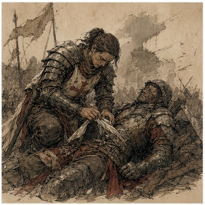
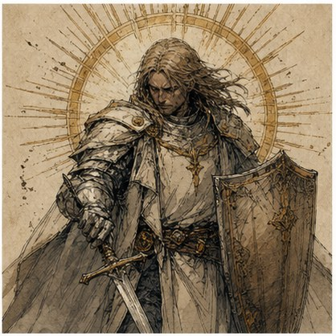
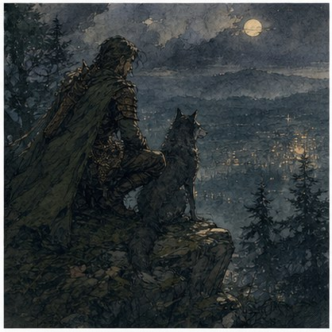
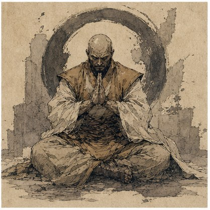
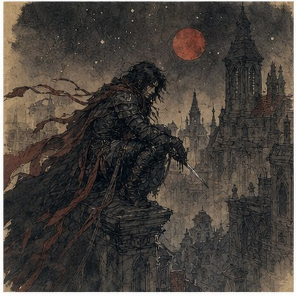
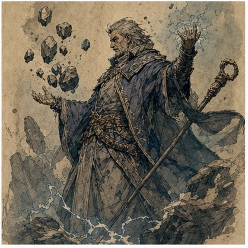

DUNGEONS & DRAGONS 2024
홈브류 자료실
홈브류는 클래스, 서브클래스, 종족, 피트, 백그라운드, 주문으로 나눠 관리합니다. 각 문서는 플레이 중 바로 읽을 수 있도록 규칙 표와 본문을 분리했습니다.
클래스
완전 클래스 문서입니다. 현재는 위치 - Witch를 별도 클래스 문서로 관리합니다.

종족
현재 등록된 홈브류 종족은 없습니다. 추가되면 이 분류에 모읍니다.
피트
백그라운드에 포함된 출신 재주입니다. 세부 규칙은 백그라운드 페이지의 해당 항목에 함께 정리했습니다.
워록
후원자, 피의 계약, 운명의 실처럼 초자연적 대가를 중심으로 한 서브클래스입니다.
파이터
전장 역할을 명확히 바꾸는 전술형 무술 원형입니다.

팔라딘
맹세와 신조가 플레이 방향을 강하게 정하는 서약형 서브클래스입니다.

사랑의 맹세는 팔라딘에게 다른 이들에게 기쁨과 유대를 가져오라고 부른다. 사랑의 맹세를 따른 팔라딘은 결혼식의 사제인 경우도 많고, 증오를 찾아내어 파괴하려는 모험가인 경우도 많다.
팔라딘 · 주문 확장 전승지기의 맹세 Oath of the Lore-Keeper팔라딘이 전승지기의 맹세를 하면, 그들은 오래전에 지나간 영웅들의 전설과 서사시를 지키는 데 헌신합니다.
팔라딘 · 주문 확장 슬픔의 맹세 Oath of Sorrows슬픔의 맹세를 한 팔라딘은 자신의 비탄을 적을 쓰러뜨리는 무기이자, 슬픔에 잠긴 이들의 길을 밝히는 횃불로 사용합니다.
레인저
감시, 추적, 비전 위협 대응처럼 탐사와 전투 사이를 오가는 선택지입니다.

드루이드
자연의 형태를 괴수성, 계절, 악몽, 장난 같은 테마로 비트는 회합입니다.

그늘진 숲과 무너진 신전, 야수와 흉물이 흐릿하게 뒤섞이는 경계에서, 희귀한 드루이드 회합이 모인다.
드루이드 · 주문 확장 모기의 서클 Circle of the Mosquito모기의 서클 드루이드는 자연의 흡혈성 기생충을 받아들입니다.
드루이드 · 주문 확장 파수꾼의 회합 Circle of the Warden파수꾼의 회합 드루이드는 세계의 오래된 숲과 고대 수풀을 지키는 수호자가 되도록 훈련받았습니다.
드루이드 · 주문 확장 봄의 회합 Circle of Spring봄의 회합 드루이드들은 자연이 지닌 치유와 활력의 힘을 온전히 믿습니다.
몽크
빛과 생명력을 무술 자원으로 다루는 고기동 영적 전투가 핵심입니다.

로그
피, 별자리, 의무병처럼 전문 기술의 성격이 강한 아키타입입니다.

더 큰 별자리의 표식을 지닌 당신의 영혼은 더 높은 힘의 축복을 받았습니다.
로그 · 테마형 사보추어 Saboteur일부 로그는 다양한 기술과 연금술에 대한 관심을 결합해 폭발적인 효과를 만들어냅니다.
로그 · 지원 서전 Surgeon모험가가 괴물에게 불구가 되거나 병사가 전장에서 부상을 입었는데 마법 치유라는 사치를 누릴 수 없다면, 서전이 그 빈자리를 채웁니다.
로그 · 테마형 스워시버클러 Swashbuckler (2024)스워시버클러로서 당신은 칼날의 기예에 집중합니다.
바드
공연, 풍자, 애도, 감정 조작을 마법과 결합하는 바드 대학입니다.
바바리안
피와 폭풍을 전투 지속력으로 바꾸는 공격적 길입니다.

위저드
학파 자체의 계산과 환경 조작이 강한 주문 사용자 선택지입니다.

위치
사역마, 주술, 포션, 달의 코븐을 중심으로 움직이는 자연 비전 계열 완전 클래스입니다.